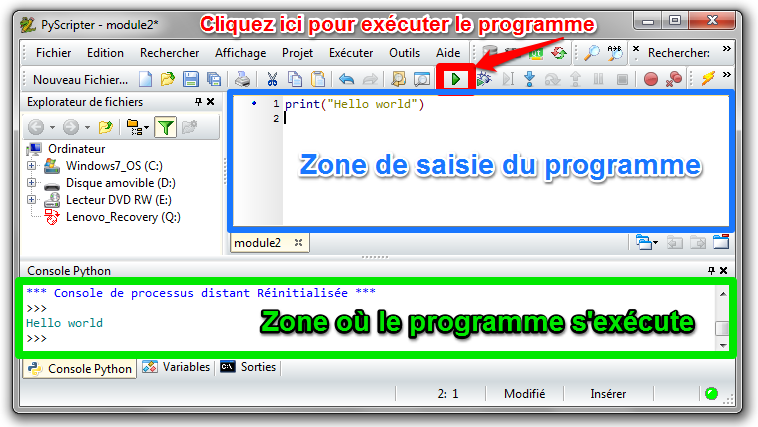
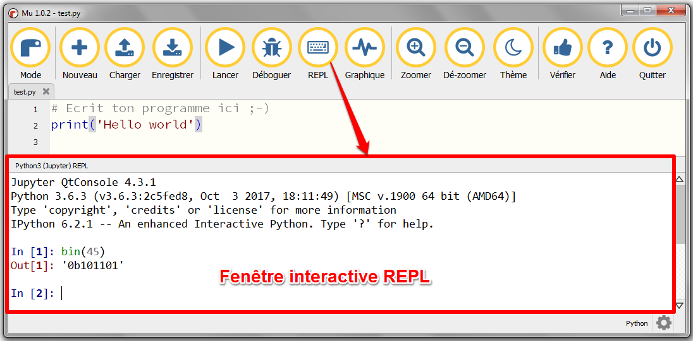

IDLE
IDLE est un environnement de développement intégré (Integrated Development Environment) pour Python. Un IDLE propose un certain nombre d'outils :
Il existe des IDLE en ligne pour Python:
Il existe des IDLE installables sur les ordinateurs:
Exemple pour Edupython:

La Console Python est un interpréteur Python en mode interactif.
Exemple de fenêtre interactive REPL dans Mu

Créé avec HelpNDoc Personal Edition: Générateur complet de livres électroniques Kindle